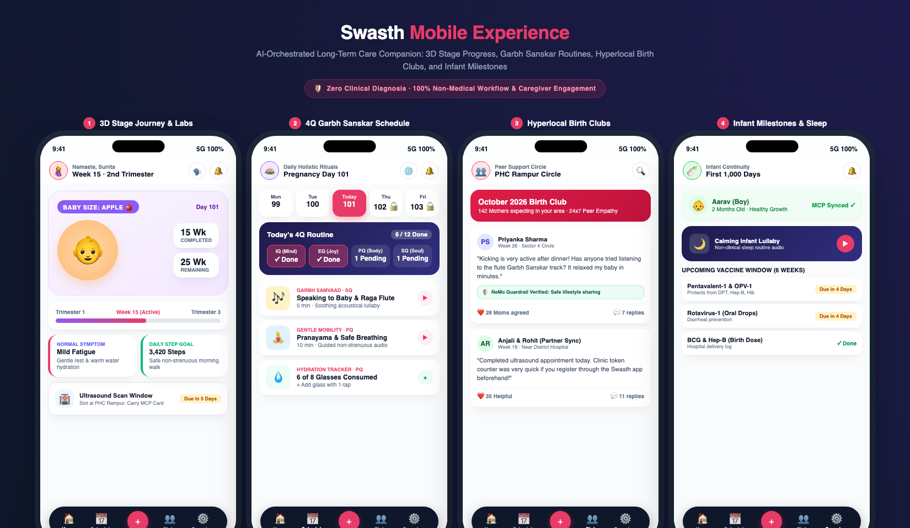
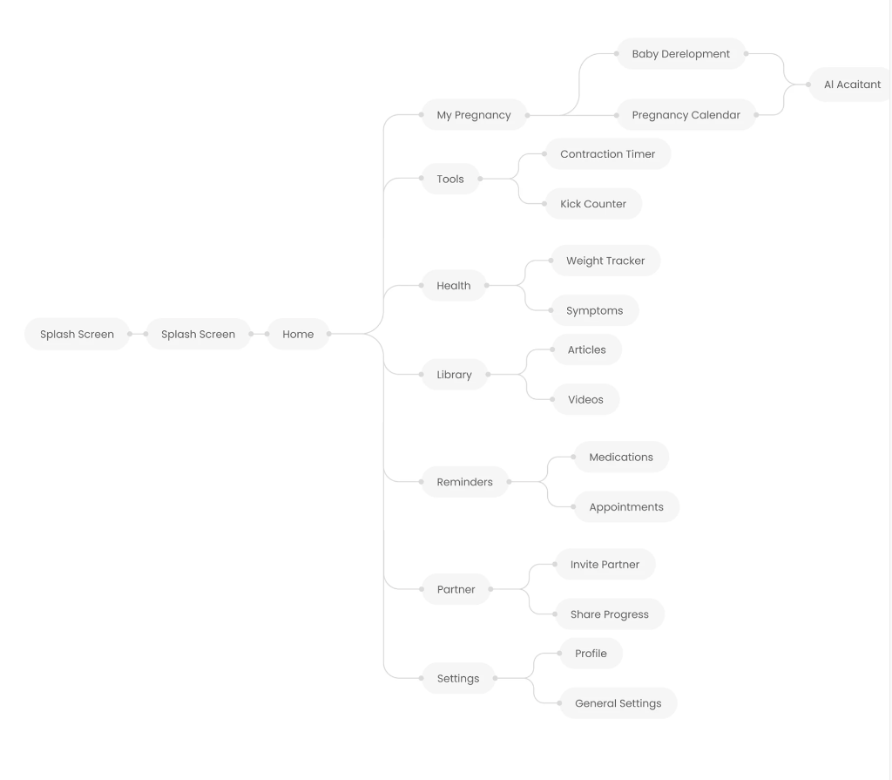
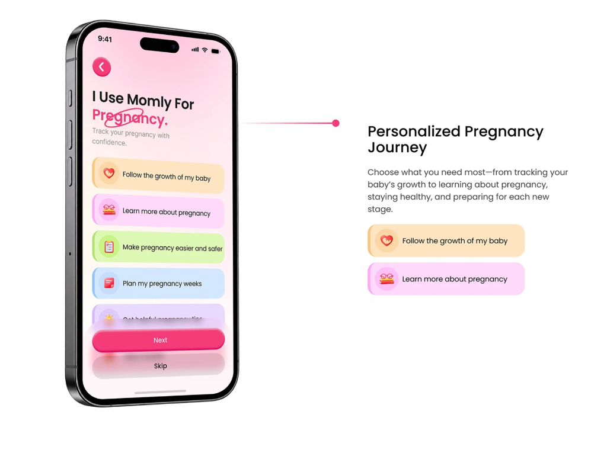
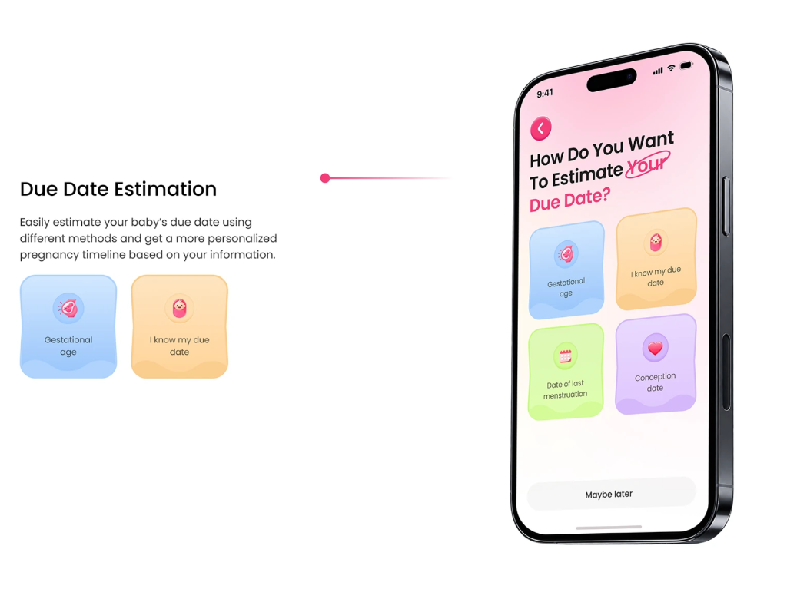
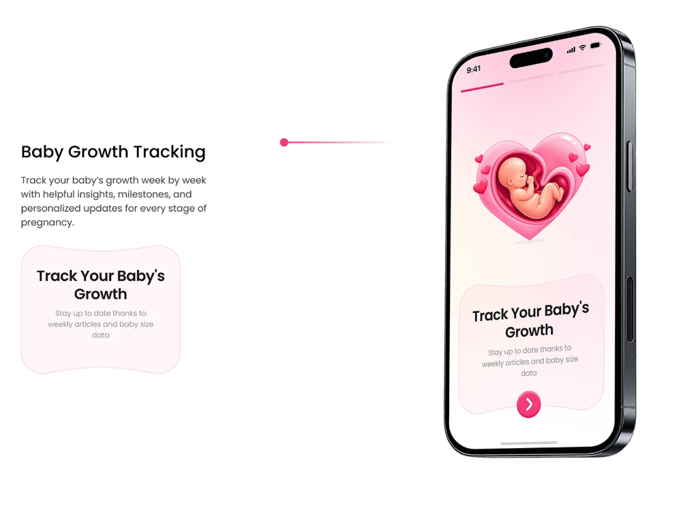
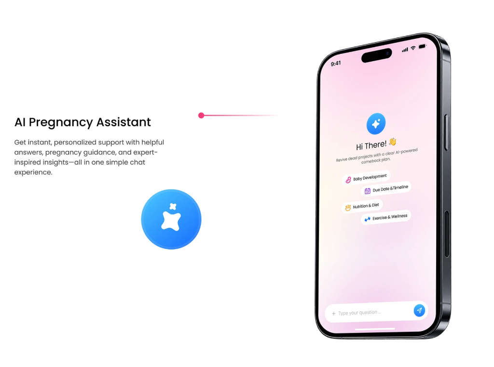
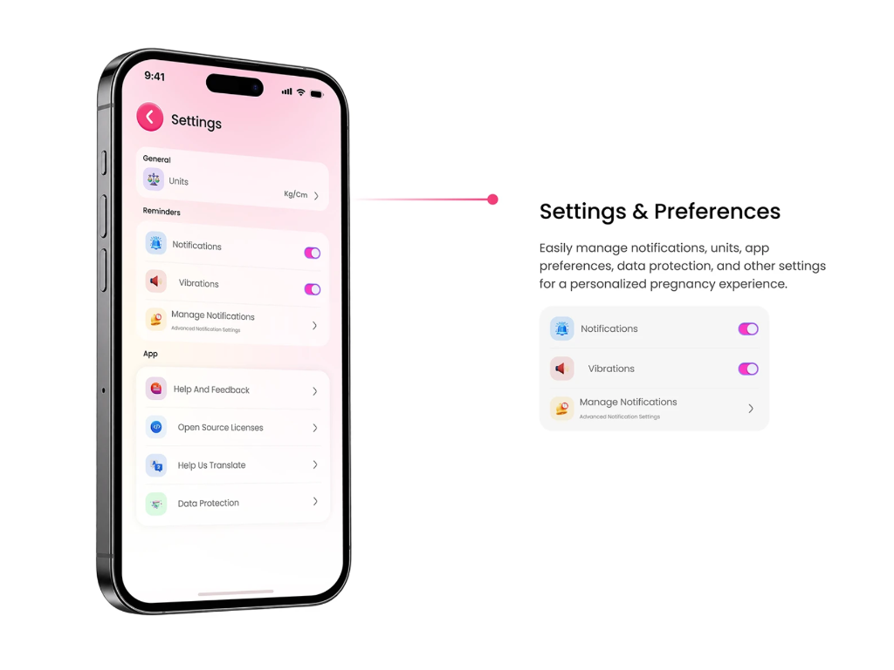

Swasth solves the 1,000-day drop-off cliff by blending daily Garbh Sanskar rituals and Hyperlocal Birth Clubs with automated, multilingual vaccination and healthcare milestone continuity.







Culturally rooted Garbh Sanskar micro-habits (IQ, EQ, PQ, SQ), calming raga music, and partner bonding that mothers look forward to every morning.
Hyperlocal peer circles connecting mothers in the same PHC radius for mutual comfort, recipes, and logistical guidance with NeMo Guardrails moderation.
Automated vaccination cohort tracking (6, 10, 14 weeks) and doctor-approved weaning diet schedules seamlessly delivered alongside daily habits.
Engineered for low-connectivity rural health centers. Functions 100% offline and synchronizes encrypted state to PostgreSQL when online.